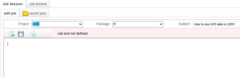

Compute gini index.
compute_gini.Rd![[Superseded]](figures/lifecycle-superseded.svg)
Compute the gini index with weights.
Arguments
- file
A LIS or LWS file.
- file_name
The name of the LIS or LWS file.
- variable
A string with the name of the variable for which gini should be computed.
- weight
A string with the name of the variable in 'file' that should be used as sample weights.
- na.rm
A boolean. Indicates if NAs should be ignored. Defaults to FALSE.
Examples
if (FALSE) { # \dontrun{
lissy_datasets <- read_lissy_files(c("fr84h", "fr94h", "fr10h"))
compute_gini(lissy_datasets[["fr1984h"]], "dhi", na.rm = TRUE)
} # }